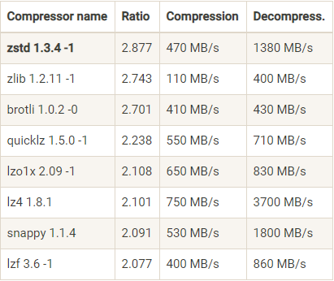

Kafka为什么快
今天这篇文章分享的主题是：Kafka为什么速度这么快？
快是基于比较得出来的，相对与其它消息队列或消息引擎，在很多讲解Kafka的文章都会提到这一点：Kafka可以很轻松的支持每秒百万级的TPS请求，其实在实际的基准测试中，每秒写入速率高达两百万，这远远高于其它消息队列的测试数据，Kafka在大数据消息队列组件中也是不二之选，并且绝大多数的大数据计算组件都与kafka进行集成。
但实际生产中的性能数据会受很多参数和环境的影响，比如acks设置：在保证数据不丢失的情况下，设置acks=all，吞吐量会明显降低；replication副本数量：副本数越多，吞吐量越低；batch大小：batch-size大小达到阈值时，会达到吞吐量峰值，超过阈值后，并不会提升性能；和压缩设置等等因素都可以影响Kafka吞吐量。
我们知道，Kafka的消息是保存或缓存在磁盘上的，一般认为在磁盘上读写是相对而言是较慢的，因为磁盘寻址是相对需要消耗大量的时间，那为什么Kafka速度还是这么快？我们得从Kafka写入为什么这么快和Kafka消费为什么这么快两方面，深入解析下Kafka主要的技术原理。
Kafka为什么写入这么快
前面已经提到过，Kafka会把消息保存在磁盘中，可以设置副本，保障Kafka消息的高可用性；基于当前不可改变的技术方案事实，为了优化写入，Kafka采取了两项措施：避免随机访问磁盘和使用MMAP技术。
避免随机访问磁盘
我们先来看这张图，出自ACM Queue - The Pathologies of Big Data一文中的数据：

采用顺序写入磁盘比随机写入磁盘的速率要快上不少，甚至比随机写入内存和SSD都略胜一筹，但这种方法有一个缺陷是没办法删除数据，所以Kafka会把所有的数据都保留下来，每个消费者对每个Topic都有可以用一个offset（偏移量）来表示读取到了第几条数据。
当然，顺序写入确实保证了一定的写入性能，但绝不是唯一的因素。
MMAP技术
如果采用传统系统调用open()、read()和write()的方式来顺序读磁盘文件，那么每个文件的读写都需要调用系统资源和磁盘访问，磁盘的访问速度还是不可能追得上内存，如果我们将文件的I/O作为常规内存访问，充分利用现代操作系统分页存储来利用内存提高I/O效率，这会变得更加高效；所以Kafka的数据并不是实时的写入磁盘，中间会有一个过程，让虚拟内存和文件进行逻辑关联，这就是MMAP技术，全称是Memory Mapped Files（内存映射）。
文件的内存映射是将每个磁盘块映射到一个或多个内存页面，实现文件磁盘地址和进程虚拟内存中的虚拟地址一一对应。实现这样的映射关系后，进程就可以采用指针的方式读写操作这一段内存，而不必在调用read()和write()等系统调用函数。
磁盘块是计算机存储中的术语，硬盘的的读写是以扇区为基本单位，磁盘上的每个磁道被等份为若干个弧段，这些弧段被称为扇区。扇区是磁盘最小的物理存储单元，操作系统将相邻的扇区组合在一起，形成一个块，对块进行管理，磁盘块是磁盘操作的基本单位。
用代码来验证是否采用MMAP的顺序读写是否更加高效。
初始化时间对比：
1 | //记录开始时间 |
顺序写时间对比：
1 | // 记录开始时间 |
testFileChannelSequentialRW class：
1 | public static void testFileChannelSequentialRW(FileChannel fileChannel) { |
testFileMMapSequentialRW class：
1 | public static void testFileMMapSequentialRW(MappedByteBuffer mappedByteBuffer1, MappedByteBuffer mappedByteBuffer2) throws Exception { |
最终测试结果：
1 | FileChannel初始化时间：6ms |
也可以对比随机读写的性能，完整代码可见Github-MMAPvsFile。
使用MMAP内存映射文件的方式操作文件，更加快速，并且性能提升的相当明显，但也有一个明显的缺陷：数据写入不可靠。写到MMAP的数据并没有真正写到磁盘上，当操作系统会在程序主动调用Flush的时候才把数据真正写到磁盘上，所以针对这个缺陷，Kafka提供了produce.type参数来控制是不是主动Flush，这也是判断Producer是异步写入还是同步写入的关键参数。
Kafka为什么读取这么快
当然，MMAP技术不仅仅优化了写入性能，对读取文件也有显著提升。为了优化读取消费，Kafka也采取了两项关键措施：Zero Copy（零拷贝）和批量压缩。
Zero Copy（零拷贝）
零拷贝技术大家都应该熟悉，聊到操作系统、文件操作和文件读写都会说到零拷贝。
以传统的read/write方式进行网络文件的传输的大致步骤如下：
调用read函数读取文件，文件数据被copy到内核缓存区->read函数返回，文件数据从内核缓冲区copy到用户缓冲区->write函数调用，将文件数据从用户缓冲区copy到内核与socket相关的缓冲区->数据从socket缓冲区copy到硬件（如网卡）缓冲区，write()系统调用返回。
1 | Socket socket = new Socket(Remote_HOST, Remote_PORT); |
这里的内核和用户是Linux文件系统的概念，操作系统的主要功能是为管理硬件资源和为应用程序开发人员提供良好开发环境，但是计算机系统的各种硬件资源是有限的，为了保证每一个进程都能够安全的执行，处理器设置两种模式来区分：内核模式和用户模式。一些容易发生安全问题的操作，比如：I/O操作，修改基址寄存器内容等，都被限制在只有内核模式下才可以执行。
这个过程中，文件数据实际上经过了四次copy操作（2次CPU拷贝，2次DMA拷贝）：读取磁盘文件->内核空间->用户空间->socket缓存区->系统调用返回。
通过流程图，可以看出其实第二次和第三次拷贝（内核空间和用户空间来回互换）是没有意义的，数据应该可以直接从内核缓冲区直接送入Socket缓冲区中，这就是零拷贝实现的机制。不过零拷贝是需要操作系统来支持，不同的OS之间有不同的实现方法。在Linux中，是基于sendfile()的方式实现。
由此，流程就变的简单许多：
sendfile系统调用，文件数据被copy到内核缓冲区->从内核缓冲区copy至内核socket相关的缓冲区->最后在socket相关的缓冲区copy到硬件缓冲区。
批量压缩
在大多数的情况下，系统服务的瓶颈不是CPU或磁盘，而是网络I/O；通过网络传输文件，发送消息接受响应都是会占据一定的网络I/O开销，进行数据压缩会消耗少量的CPU资源，不过对于Kafka而言。网络I/O更应该需要考虑。
Kafka将多条消息一起压缩，而不是单个消息压缩，并且批量的消息可以通过压缩的形式进行传输和保存，直到被消费者消费时才解压。Kafka支持四种压缩算法：GZIP，Snappy，LZ4和Zstd。
下面这张表是 Facebook Zstandard（Zstd）官网提供的一份压缩算法比较结果：

看一个压缩算法的优劣，有两个重要的指标：一个指标是压缩比，原先占100M空间的文件经压缩之后占20M空间，那么压缩比就是 5，压缩比越高越好；另一个指标是压缩和解压缩的吞吐量，比如每秒能压缩或解压缩多少 MB 的数据，吞吐量越高越好。
另外对于Kafka压缩，Producer端和Broker端配置是分开的，所以得要保证两端的压缩配置是相同的，不然就会出现多余的解压和重新压缩。
不可否认，文件分段存储（Topic-Partition-Segment）的机制（Topic被分为了多个区partition, 每个partition又分为了多个segment，所以一个队列中的消息实际上是保存在N多个片段文件中，通过分段的方式，每次文件操作都是对一个小文件的操作，同时也增加了并行处理能力），利用Offset偏移量快速寻找到到哪去消费消息来减少随机I/O，以及批量发送的机制也是其中的因素。